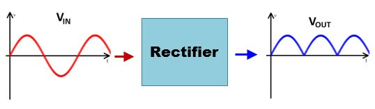
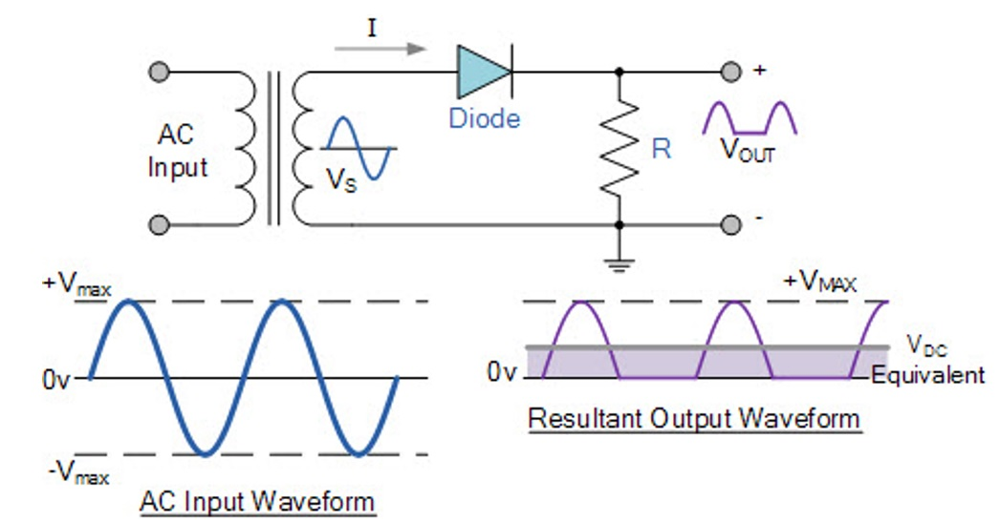
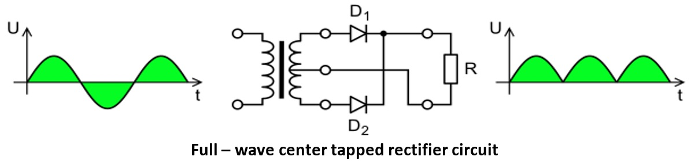
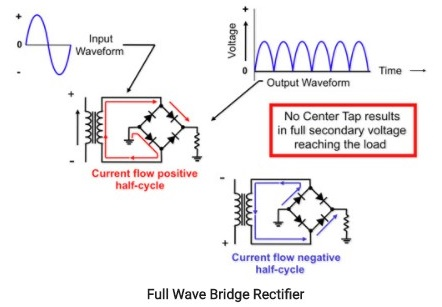

Rectifier
As a common part of all the electronic power supplies circuits, rectifier circuit provides DC power supply from available AC supply for proper function of electronic equipment.
A rectifier is a circuit that is used for converting AC supply into unidirectional DC supply. This process of converting alternating current (AC) to direct current (DC) is also called as rectification.

· Diode rectifier circuit types:
Half-wave Rectifier Full-wave center-tapped Rectifier Full-wave bridge Rectifier
Half Wave Rectifier
It is a simple type of rectifier made with single diode which is connected in series with load resistor. For small power levels this type of rectifier circuit is commonly used.
During the positive half of the AC input, diode becomes forward biased and currents starts flowing through it. During the negative half of the AC input, diode becomes reverse biased and current stops flowing through it. Output waveform across the load is shown in figure. Because of high ripple content in the output, this type of rectifier is seldom used with pure resistive load.
Full Wave Center-tapped Rectifier
This type of rectifier uses two diodes and a transformer with center tapped secondary winding. During the positive half cycle of the input AC diode D1 is forward biased and the current starts flowing to the load through it. During the negative half of the input diode D2 forward biased and D1 becomes reverse biased. Load current start flowing through D2 during this negative peak. Note that the current flow through load has not changed even when the voltage polarity changed.
|  |
Advantages of this rectifier are lower ripple factor and higher efficiency, but the necessity of transformer with center tapping secondary is the main disadvantage and makes a circuit as costlier.
Full Wave Bridge Rectifier
Using the same secondary voltage, this bridge rectifier can produce almost double the output voltage as compared with full wave center-tapped transformer rectifier. During the positive half of the input AC diodes D1 and D2 are forward biased and D3 and D4 are reverse biased. Thus load current flows through D1 and D2 diodes. During the negative half cycle of the input diodes D3&D4 are forward biased and D1&D2 are reverse biased. Therefore load current flows through D3&D4 diodes.

However, the DC current produced by a basic rectifier (half wave rectifier) is not a pure DC current. It is a pulsating DC current. By using the combination of components such as capacitors, inductors, and resistors in the circuit, the smoothening of pulsating DC to pure DC can be achieved.
Additional resources:
http://www.efxkits.us/types-of-rectifiers-with-workings/